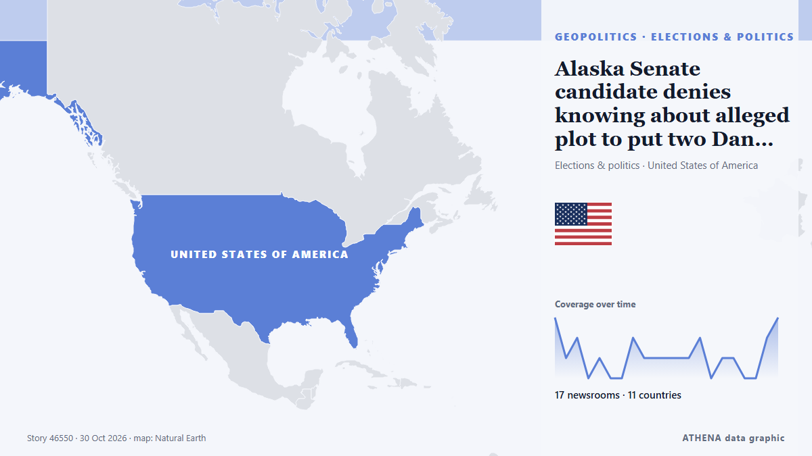

Alaska Senate candidate denies knowing about alleged plot to put two Dan Sullivans on ballot

The incumbent Republican running for re-election and allies have accused the Democrats of trying to confuse voters by recruiting a second Dan Sullivan to also stand in the race. من BBC News
نشرته بشكل مستقل 19 مصدرًا في 13 دولة منذ 28 أكتوبر، وأول من نشره The Independent؛ والتغطية في ذروتها. لا يجد ATHENA مؤشرات خطر في التغطية. الثقة 91٪ (مرتفعة)، وعدد المصادر المستقلة المؤكِّدة: 19، بمتوسط موثوقية للمصادر يبلغ 75٪.
لماذا يهم: قد تغيّر التطورات الأمنية والدبلوماسية التحالفات والتجارة والأسواق إلى ما هو أبعد بكثير من الدول المعنية مباشرة.
ما الذي تغيّر: 11 تقارير جديدة من 8 غرف أخبار خلال 24 ساعة حتى 30 أكتوبر.
العنوان الأول: Trump calls for removal of Alaska’s Democratic Senate candidate from ballot
تُعرض العناوين بالإنجليزية كما نُشرت.
نظرة سريعة
اختير وقُيِّم وكُتب وفق منهجية ATHENA المنشورة. لا يتدخل أي محرر في الأحداث بعينها. كيف يُنتَج ›
| 28 Oct 20:21 UTC | 3 |
|---|---|
| 28 Oct 22:21 UTC | 1 |
| 29 Oct 00:21 UTC | 2 |
| 29 Oct 02:21 UTC | 0 |
| 29 Oct 04:21 UTC | 1 |
| 29 Oct 06:21 UTC | 0 |
| 29 Oct 08:21 UTC | 0 |
| 29 Oct 10:21 UTC | 2 |
| 29 Oct 12:21 UTC | 1 |
| 29 Oct 14:21 UTC | 1 |
| 29 Oct 16:21 UTC | 1 |
| 29 Oct 18:21 UTC | 1 |
| 29 Oct 20:21 UTC | 1 |
| 29 Oct 22:21 UTC | 2 |
| 30 Oct 00:21 UTC | 0 |
| 30 Oct 02:21 UTC | 1 |
| 30 Oct 04:21 UTC | 1 |
| 30 Oct 06:21 UTC | 0 |
| 30 Oct 08:21 UTC | 0 |
| 30 Oct 10:21 UTC | 2 |
| 30 Oct 12:21 UTC | 3 |
| 30 Oct 14:21 UTC | 0 |
| 30 Oct 16:21 UTC | 0 |
| 30 Oct 18:21 UTC | 0 |
| 30 Oct 20:21 UTC | 2 |
| 30 Oct 22:21 UTC | 1 |
لماذا هذه الأرقام
الأهمية
الخطر
الثقة
التغطية — من نشر الخبر ومتى
العنوان كما نُشر · يفتح الأصل- The Independent · المملكة المتحدة · United KingdomTrump demands Alaska ballot change after report on Dems recruiting Dan Sullivan to campaign
- The Jerusalem Post · إسرائيل · IsraelUS Democrats allegedly recruited 'spoiler' candidates to undermine Republican senator in Alaska
- Punch · نيجيريا · NigeriaTrump demands Alaska democrat off ballot after NY Times report
- Anadolu Agency (English) · تركيا · TurkeyTrump calls for removal of Alaska’s Democratic Senate candidate from ballot
- Arab News · المملكة العربية السعودية · Saudi ArabiaTrump calls for prosecution of Democratic Alaska Senate candidate over spoiler candidate controversy
- The Hill · الولايات المتحدة · United StatesTrump calls alleged Alaska Senate spoiler scheme 'voter fraud at the highest level'
- Sydney Morning Herald · أستراليا · Australia‘Decoy Dan’ dirty trick has sent Trump on the warpath in Alaska
- Al Jazeera English · قطر · QatarTrump demands Alaska candidates be removed over alleged ballot scheme
- BBC News · المملكة المتحدة · United KingdomAlaska governor orders probe into Democratic campaign's alleged links to same-name candidate
- IOL · جنوب أفريقيا · South AfricaTrump accuses Alaska Democrats of fraud over same-name scandal
- Gulf News · الإمارات العربية المتحدة · United Arab EmiratesAlaska governor orders probe into election same-name ‘spoiler’
- NPR · الولايات المتحدة · United StatesFishing is a key issue in Alaska's tight U.S. Senate race
- Sydney Morning Herald · أستراليا · AustraliaAlaska facing double Dan debacle
- RTÉ News · أيرلندا · IrelandAlaska allegations complicate fight for US Senate control
- NPR · الولايات المتحدة · United StatesAlaska's all-important Senate race is roiled by a report on alleged spoiler candidate
- PBS NewsHour · الولايات المتحدة · United StatesRepublicans seize on controversy in Alaska's closely watched Senate race
- SBS News · أستراليا · AustraliaTwo candidates, one name: The double Dan Sullivan drama in a close US midterm race
- CNBC World · الولايات المتحدة · United StatesDOJ escalates Alaska Senate lawsuit over dueling Sullivan candidacies
- The Guardian · المملكة المتحدة · United KingdomFirst Thing: Alaska Senate race descends into legal acrimony over second Dan Sullivan
- The Hill · الولايات المتحدة · United StatesPeltola controversy puts Alaska and the wider Senate battle in focus
- The Hill · الولايات المتحدة · United StatesPeltola denies knowing about Alaska spoiler candidate Dan J. Sullivan
- The Hill · الولايات المتحدة · United StatesDOJ issues subpoenas in Alaska Senate race: Reports
- BBC News · المملكة المتحدة · United KingdomAlaska Senate candidate denies knowing about alleged plot to put two Dan Sullivans on ballot
- The Canadian Press (via CityNews) · كندا · CanadaIn Alaska race, Trump targets a long, sometimes sordid political tradition of ‘spoiler’ candidates
- PBS NewsHour · الولايات المتحدة · United StatesTop federal prosecutor in Alaska says criminal probe underway over would-be spoiler Senate candidate
- New Straits Times · ماليزيا · MalaysiaUS govt ramps up probe in Alaska over spoiler Senate candidate claim